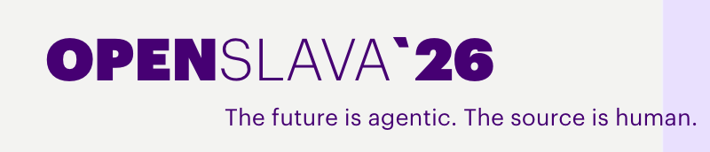

Agentic AI, Live: Orchestrating Agents with Real-Time Data¶

Your session
OpenSlava 2026 · Day 1, Wednesday 14 October · 15:00–17:30 · Room 2 Interactive 2.5-hour hands-on lab · Intermediate · Technical Presented by Ivor Rothwell, IBM
AI agents are easy to prototype and hard to run in production — the gap is usually integration, live data, and control. In this hands-on lab, you'll build a working agentic AI setup end-to-end: assembling and orchestrating agents (using IBM watsonx Orchestrate), wiring real-time event streams (using IBM Confluent) so agents act on current state instead of static snapshots, and applying governance controls.
The short version
Build a production-shaped, event-driven AI pipeline: Kafka events are detected by Flink SQL, handed to a watsonx Orchestrate agent for reasoning, and the agent's schema-validated decision is published back onto a stream — all built with IBM Bob as your pair programmer.
Why agents need real-time data¶
An agent is only as good as the state it reasons over. Most agent demos read from a database snapshot, a nightly export, or a vector index built last week — and they look convincing, because the question and the data were chosen together.
Production breaks that arrangement. The data moves, and the agent doesn't notice.
The failure mode is not an error — it's a confident wrong answer
An agent told "stock: 75 units" will reason impeccably about 75 units. If 60 of them sold in the last hour, nothing in the system raises an exception. You get a fluent, well-argued recommendation to do the wrong thing, and no stack trace to tell you.
Three properties of streaming change what an agent can be trusted to do:
| Property | What it gives the agent |
|---|---|
| Events arrive as they happen | The agent reasons about now, not about the last export |
| The stream is the audit trail | Every input and every decision is replayable, in order |
| Detection is separable from reasoning | Cheap, deterministic code finds candidates; the expensive model only judges the ones that matter |
That last point is the one most often missed. Running an LLM over every event is slow and costly. Running it over nothing is useless. The pattern in this lab — a stream processor deciding what deserves attention, an agent deciding what to do about it — is what makes agentic AI affordable at event-stream volume.
Request-response vs event-driven¶
Chat agent: Human ──▶ Agent ──▶ Human (a person starts every interaction)
Event-driven: System ──▶ Agent ──▶ System (the world starts it; nobody is waiting)
The second shape is where most enterprise value sits, and it's the harder one to build: no human in the loop to sanity-check the output, so the contract between the agent and everything downstream has to be enforced by machinery. That's why this lab spends real time on schema validation and delivery semantics, not just on prompting.
The products, and what each is actually for¶
Four pieces, one job each
The stack looks busy until you see that each product owns exactly one decision.
Confluent Cloud — managed Apache Kafka. It is the transport and the system of record for events: durable, ordered, replayable. Topics decouple producers from consumers, so the agent can be added, removed, or redeployed without touching the systems generating events. In this lab it carries raw sale events, velocity alerts, and the agent's decisions. Owns: how events move and persist.
Apache Flink — stream processing, also managed by Confluent Cloud and written here as Flink SQL. It runs continuously as a deployed job, not as a one-shot query. It watches every event and emits an alert only when a pattern matches. It is deterministic, fast, and cheap, and it makes no judgement calls. Owns: what deserves the agent's attention.
IBM watsonx Orchestrate — the agent platform. It hosts the agent, gives it tools it can call, grounds it in a knowledge base, and enforces the instructions that shape its output. It handles the model, the reasoning loop, and the tool invocations so you don't build that machinery yourself. Owns: judgement — urgency, trade-offs, recommended action.
IBM Bob — the AI development environment you build in. With this workshop's configuration it knows the watsonx Orchestrate platform: it consults live ADK docs, inspects your environment through MCP, and generates platform-correct tools and agents from a plain-language description. Owns: how fast you get from intent to a working artifact.
And the glue you write yourself — a small Python bridge — reads alerts, calls the agent, validates the response against a JSON schema, and publishes the result. That validation step is not ceremony: it's the boundary that stops a plausible-sounding but malformed answer from reaching a downstream system.
What you'll build¶
POS sale events ──▶ Confluent Cloud (Kafka)
│
▼
Flink SQL — velocity spike detector
│
▼
Python bridge ──▶ watsonx Orchestrate agent
(tools + knowledge base)
│
▼
Schema-validated decision ──▶ Kafka topic
A fashion retailer needs to know — within seconds — when a product starts selling abnormally fast, and what to do about it: rush reorder, surge price, transfer stock, or just keep watching. By the end of the lab you will have that decision loop running end to end.
| Component | Technology | Role |
|---|---|---|
| Kafka topics | Confluent Cloud | Carry raw inventory events and velocity alerts |
| Velocity spike detector | Flink SQL | Flags products selling far above baseline |
| Python bridge | confluent-kafka + httpx |
Reads alerts, calls the agent, publishes decisions |
| Inventory analysis agent | watsonx Orchestrate | Reasons about urgency, recommends actions, emits strict JSON |
| Knowledge base | watsonx Orchestrate KB | Decision rules, product history, guardrails |
Agenda¶
| Section | Time | Difficulty |
|---|---|---|
| Setup & Environment — accounts, Bob IDE, workspace, ADK | 30 min | ⭐ |
| The Lab — Confluent + Flink SQL + watsonx Orchestrate agent | 85–95 min | ⭐⭐⭐⭐ |
| Stretch exercises — optional, go deeper | 20 min | ⭐⭐⭐ |
Before you start¶
You need the following. The setup guide walks you through every one of them — don't install anything ahead of the session unless you want to save time.
- Python 3.11–3.13
-
uvpackage manager - IBM Bob IDE + a Bob trial account
- A watsonx Orchestrate instance (free trial, or one provided by your instructor)
- A Confluent Cloud account — created during the lab with an instructor-supplied promo code, so no credit card is needed
Region matters
If you create your own watsonx Orchestrate trial, use Frankfurt (eu-de) so the Confluent connection steps later in the lab match what everyone else sees.
How to use Bob in this lab¶
The workspace you download ships with a .bob/ configuration that gives Bob three
layers of watsonx Orchestrate expertise:
-
WXO Agent Architect mode
Bob's persona for this lab — consults live wxO docs before answering and inspects your environment through the ADK MCP server.
-
wxo-dev-rule-enhancedrule
Always-on platform conventions, so generated code adheres to wxO best practices even outside that mode.
-
wxo-langgraphskill
Deep, on-demand reference knowledge that activates automatically when the topic matches.
Ask Bob in full sentences, with context:
Effective prompts
- "Bob, create a Python tool for wxO that looks up a store location from a CSV."
- "Bob, my agent response fails schema validation on
reasoning— what does the schema require?" - "Bob, my
WXO_API_KEYis correct but I get a 401 — what could cause that?"
Less effective
- "Bob, fix this" — no context
- "Bob, make it work" — nothing to go on
Keep one Bob session per topic. Start a new task when you switch to something unrelated.
Getting help¶
- Ask Bob: "Bob, I'm stuck on [specific issue]"
- watsonx Orchestrate ADK documentation
- IBM watsonx Orchestrate product docs
- Confluent Cloud documentation
- Raise a hand — an instructor is in the room.